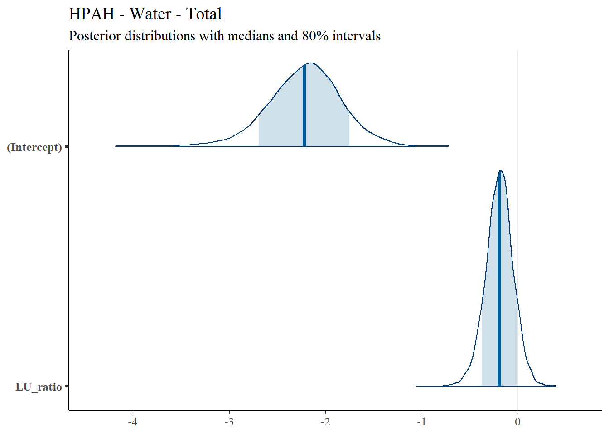
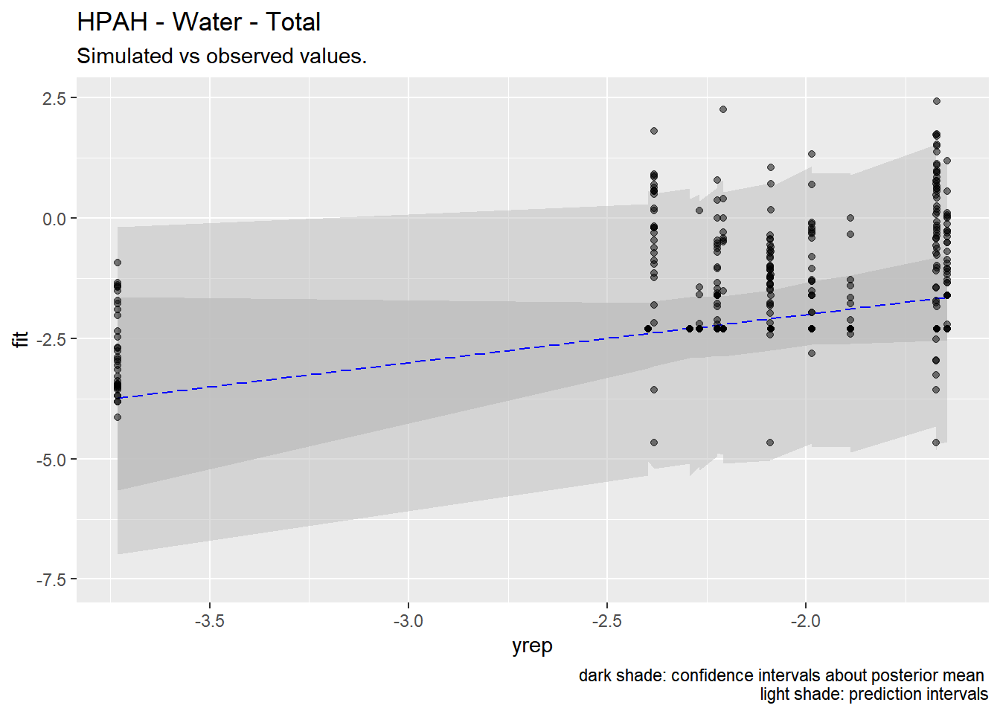

Chapter 4 Water Quality Statistics
We developed a spatial regression model to estimate concentrations for constituents of concern (COCs) in Puget Sound urban stormwater. We first used a linear mixed model to select spatial regression parameters. We then used a censored Markov chain Monte Carlo simulation to perform final regressions.
4.1 Data Sources
4.1.1 Outfall Data
The primary source of measured stormwater data is the S8.D Municipal Stormwater Permit Outfall Data (referred to as the S8 Data in this document) provided by the Washington Department of Ecology (William Hobbs et al. 2015). Special Condition S8.D of the 2007-2012 Phase I Municipal Stormwater Permit required permittees to collect and analyze data to evaluate pollutant loadings of stormwater discharged from different land uses: high density (HD) residential, low density (LD) residential, commercial, and industrial. Phase I Permittees5 collected water quality and flow data, sediment data, and toxicity information from stormwater discharges during storm events.
The stormwater outfall data is available from Ecology via an open-data api at: https://data.wa.gov/Natural-Resources-Environment/Municipal-Stormwater-Permit-Outfall-Data/d958-q2ci.
COCs analyzed in this study are:
- Zinc - Total
- Copper - Total
- Nitrite-Nitrate - Dissolved
- Lead - Total
- Total Phosphorus - Total
- Total Suspended Solids
- Total Phthalate
- Total Polycyclic Aromatic Hydrocarbons (PAH)
- Total Carcinogenic PAH (CPAH)
- Total High molecular weight PAH (HPAH)
We extracted data for these COCs, and performed minimal data cleaning. We filtered out rejected data (values with a R or REJ flag), removed replicates, and removed three data points that were obvious outliers. While our analysis is not overly sensitive to outliers, three parameters had reported data that were orders of magnitude higher than the rest of the data. One high-outlier value was removed for each of the following COCs: Total Suspended Solids, Nitrite-Nitrate, and Total Phosphorus.
Outliers were removed for Figure 4.1 shows data before outliers were removed. Figure 4.3 shows data after outliers were removed.
Figure 4.1: All observations - outliers in place
Quantile-quantile plots of COCs analyzed are shown in 4.2
Figure 4.2: Quantile-quantile plots of COCs, log scale
Figure 4.3: All observations - outliers removed
4.2 Spatial data
For this study, we did not rely on the permittee’s self-reported land use type to run regression models predicting pollution loading from land use. A visual scan of our land cover data layer versus self-reported land use types revealed little agreement among permittee definitions of the four land use types (high density residential, low density residential, commercial, industrial). Therefore, we compiled a suite of continuous and categorical landscape datasets from which to run prediction loading models. We divide these into land use and landscape data.
4.2.1 Land use
In order to employ a consistent analysis across different monitored watersheds we extracted land use data from Ecology’s 2010 Statewide Land use data set6. Ecology generated the coverage from digital county tax parcel layers using Department of Revenue (DOR) two digit land use codes (see; WAC 458-53-030, Stratification of assessment rolls - real property).
4.2.2 Landscape data
For each watershed contained in the S8 dataset, potentially relevant landscape data was extracted from the following sources below:
| Layer | ID | Source |
|---|---|---|
| Nighttime Lights | nighttime_lights | Global Radiance Calibrated Nighttime Lights |
| Particulate Matter 2.5μm | pm25 | van Donkelaar et al. 2018. |
| Rooftop Density | roofs | Microsoft AI US Building Footprints |
| Imperviousness | impervious | TNC Puget Sound land cover |
| Age of Impervious Surface | change_year_index | Tsinghua University FROM-GLC year of change to impervious surface |
| Logarithm of Population Density | logPopulation | CIESIN - Columbia University Gridded Population of the World, Version 4 |
| Logarithm of Average Daily Traffic Volume | logTraffic | INRIX Traffic |
4.3 Methods
4.3.1 Pre-processing of spatial data
In order to use the landscape data at an appropriate scale across the study area, spatial predictors were stacked and then convolved with a 100-meter gaussian kernel. This resulted in a “fuzzy” set of predictors that could apply across dataset boundaries. These values were then extracted for each monitored watershed. Values were scaled and centered for regression purposes.
4.3.2 Controlling for multicolinearity
To address multicolinearity, we calculate the variance inflation factor (VIF) and iteratively remove parameters with the highest VIF. We keep removing parameters one at a time until all VIF values are below 10.0. Table ?? shows final VIF factors for Zinc. Similar values were found for all other COCs and are not reported here.
|
4.3.3 Censored Data
All COCs had non-detect (left-censored) data present. Ecology flagged non-detect data and provided the reporting limit for each non-detect value. For purposes of model selection, non-detect values were substituted with the reporting limit. For regression, concentration was modeled as a two-parameter response variable according to the approaches detailed by Hadfield (2010) and Helsel (2012). We set the first parameter equal to the measured concentration and the second parameter equal to the reporting limit. We then specified a censored-gaussian prior distribution or censored-log-gaussian prior distribution.
4.3.4 Model Selection
Four potential models were evaluated for each COC:
1. linear - Non-transformed concentrations with location random effects
2. log-linear - Log-transformed concentrations with location random effects
3. linear seasonal - Non-transformed concentrations with location random effects with the addition of a seasonal fixed-effect
4. log-linear seasonal - Log-transformed concentrations with location random effects with the addition of a seasonal fixed-effect
Seasonal factors were included in the model selection by designating an integer corresponding to the season in which data were collected: (1 = Winter, 2 = Spring, 3 = Summer, 4 = Autumn)
Model selection was performed through Backward elimination of random-effect terms followed by backward elimination of fixed-effect terms. Denominator degrees of freedom and F-statistics were calculated using Satterthwaite’s method.
For each model we calculated the Akaike information criterion (AIC) estimator. The model with the lowest AIC was selected for regression.
Linear model results for each COC are shown in the following tables. In general, the model with the lowest AIC was selected to move on to the Bayesian analysis. Only predictors that are statistically significant are shown. In some cases, no predictors were significant. In those cases, only the model intercept is reported.
4.3.4.1 Zinc
Model with lowest AIC: log-linear
Predictors Selected: change_year_index
| linear seasonal | log-linear seasonal | |||||
|---|---|---|---|---|---|---|
| Predictors | Estimates | CI | p | Estimates | CI | p |
| (Intercept) | 108.82 | 73.63 – 144.01 | <0.001 | 4.01 | 3.62 – 4.41 | <0.001 |
| nighttime_lights | 57.10 | 31.06 – 83.14 | <0.001 | |||
| season2 | 4.19 | -26.00 – 34.37 | 0.786 | -0.06 | -0.26 – 0.13 | 0.521 |
| season3 | 115.23 | 79.56 – 150.90 | <0.001 | 0.39 | 0.16 – 0.62 | 0.001 |
| season4 | 8.81 | -15.87 – 33.49 | 0.484 | 0.00 | -0.16 – 0.16 | 0.981 |
| change_year_index | 1.00 | 0.64 – 1.37 | <0.001 | |||
| Random Effects | ||||||
| σ2 | 11365.18 | 0.46 | ||||
| τ00 | 2327.86 Location | 0.46 Location | ||||
| ICC | 0.17 | 0.50 | ||||
| N | 14 Location | 14 Location | ||||
| Observations | 414 | 414 | ||||
| Marginal R2 / Conditional R2 | 0.267 / 0.392 | 0.491 / 0.745 | ||||
| AIC | 5040.945 | 920.701 | ||||
4.3.4.2 Copper
Model with lowest AIC:log-linearPredictors Selected:
logtraffic,change_year_index
| linear seasonal | log-linear seasonal | |||||
|---|---|---|---|---|---|---|
| Predictors | Estimates | CI | p | Estimates | CI | p |
| (Intercept) | 67.29 | 48.41 – 86.17 | <0.001 | 5.07 | 3.46 – 6.67 | <0.001 |
| logtraffic | 34.58 | 22.86 – 46.31 | <0.001 | 1.86 | 0.83 – 2.90 | <0.001 |
| season2 | -0.71 | -2.93 – 1.50 | 0.528 | |||
| season3 | 6.38 | 3.77 – 9.00 | <0.001 | |||
| season4 | -0.68 | -2.53 – 1.17 | 0.470 | |||
| change_year_index | 0.48 | 0.15 – 0.80 | 0.004 | |||
| Random Effects | ||||||
| σ2 | 66.16 | 0.44 | ||||
| τ00 | 44.74 Location | 0.26 Location | ||||
| ICC | 0.40 | 0.37 | ||||
| N | 14 Location | 14 Location | ||||
| Observations | 438 | 438 | ||||
| Marginal R2 / Conditional R2 | 0.512 / 0.709 | 0.532 / 0.703 | ||||
| AIC | 3116.708 | 938.998 | ||||
4.3.4.3 Nitrite-Nitrate
Model with lowest AIC:log-linear seasonal
Predictors Selected: LU_ratio
| linear seasonal | log-linear seasonal | |||||
|---|---|---|---|---|---|---|
| Predictors | Estimates | CI | p | Estimates | CI | p |
| (Intercept) | 575.78 | 389.75 – 761.81 | <0.001 | 5.81 | 5.45 – 6.16 | <0.001 |
| LU_ratio | 80.83 | 12.29 – 149.37 | 0.021 | 0.16 | 0.03 – 0.29 | 0.019 |
| season2 | -109.12 | -231.14 – 12.89 | 0.080 | -0.01 | -0.22 – 0.19 | 0.885 |
| season3 | 16.24 | -130.58 – 163.05 | 0.828 | 0.48 | 0.24 – 0.73 | <0.001 |
| season4 | -165.25 | -264.46 – -66.03 | 0.001 | -0.37 | -0.53 – -0.21 | <0.001 |
| Random Effects | ||||||
| σ2 | 180488.75 | 0.50 | ||||
| τ00 | 105950.38 Location | 0.41 Location | ||||
| ICC | 0.37 | 0.45 | ||||
| N | 14 Location | 14 Location | ||||
| Observations | 406 | 406 | ||||
| Marginal R2 / Conditional R2 | 0.146 / 0.462 | 0.206 / 0.567 | ||||
| AIC | 6065.056 | 933.650 | ||||
4.3.4.4 Lead
Model with lowest AIC:log-linear (seasonal effects not significant at model selection)Predictors Selected:
change_year_index,
| linear seasonal | log-linear seasonal | |||||
|---|---|---|---|---|---|---|
| Predictors | Estimates | CI | p | Estimates | CI | p |
| (Intercept) | 30.48 | 14.45 – 46.51 | <0.001 | 1.60 | 1.05 – 2.16 | <0.001 |
| change_year_index | 4.26 | 1.39 – 7.13 | 0.004 | 1.02 | 0.49 – 1.54 | <0.001 |
| logPopulation | -3.01 | -5.49 – -0.53 | 0.018 | |||
| logtraffic | 13.08 | 2.51 – 23.66 | 0.015 | |||
| Random Effects | ||||||
| σ2 | 132.50 | 0.69 | ||||
| τ00 | 16.29 Location | 0.96 Location | ||||
| ICC | 0.11 | 0.58 | ||||
| N | 14 Location | 14 Location | ||||
| Observations | 417 | 417 | ||||
| Marginal R2 / Conditional R2 | 0.201 / 0.288 | 0.349 / 0.729 | ||||
| AIC | 3238.277 | 1087.496 | ||||
4.3.4.5 Total Phosphorus
Model with lowest AIC:log-linear seasonalPredictors Selected:
logtraffic
| linear seasonal | log-linear seasonal | |||||
|---|---|---|---|---|---|---|
| Predictors | Estimates | CI | p | Estimates | CI | p |
| (Intercept) | 468.29 | 302.21 – 634.37 | <0.001 | 7.08 | 5.74 – 8.42 | <0.001 |
| logtraffic | 214.28 | 111.18 – 317.38 | <0.001 | 1.68 | 0.85 – 2.51 | <0.001 |
| season2 | -12.04 | -38.11 – 14.02 | 0.365 | -0.11 | -0.28 – 0.07 | 0.225 |
| season3 | 95.37 | 64.16 – 126.59 | <0.001 | 0.77 | 0.56 – 0.98 | <0.001 |
| season4 | 8.70 | -13.09 – 30.49 | 0.434 | 0.15 | 0.00 – 0.29 | 0.048 |
| Random Effects | ||||||
| σ2 | 8919.81 | 0.39 | ||||
| τ00 | 3317.80 Location | 0.22 Location | ||||
| ICC | 0.27 | 0.36 | ||||
| N | 14 Location | 14 Location | ||||
| Observations | 424 | 424 | ||||
| Marginal R2 / Conditional R2 | 0.298 / 0.488 | 0.349 / 0.586 | ||||
| AIC | 5065.815 | 863.509 | ||||
4.3.4.6 Total Suspended Solids
Model with lowest AIC:log-linear (seasonal effects not significant at model selection)Predictors Selected:
logtraffic
| linear | log-linear | |||||
|---|---|---|---|---|---|---|
| Predictors | Estimates | CI | p | Estimates | CI | p |
| (Intercept) | 152052.47 | 74594.12 – 229510.82 | <0.001 | 13.20 | 11.65 – 14.75 | <0.001 |
| logtraffic | 63941.48 | 15699.52 – 112183.44 | 0.009 | 1.95 | 0.98 – 2.91 | <0.001 |
| Random Effects | ||||||
| σ2 | 3259447978.93 | 1.06 | ||||
| τ00 | 682696072.38 Location | 0.28 Location | ||||
| ICC | 0.17 | 0.21 | ||||
| N | 14 Location | 14 Location | ||||
| Observations | 415 | 415 | ||||
| Marginal R2 / Conditional R2 | 0.090 / 0.248 | 0.213 / 0.377 | ||||
| AIC | 10259.857 | 1240.983 | ||||
4.3.4.7 Total Phthalate
Model with lowest AIC:log-linear (seasonal effects not significant at model selection)Predictors Selected: none
| linear seasonal | log-linear seasonal | |||||
|---|---|---|---|---|---|---|
| Predictors | Estimates | CI | p | Estimates | CI | p |
| (Intercept) | 2.90 | 1.78 – 4.01 | <0.001 | 0.42 | 0.01 – 0.83 | 0.044 |
| Random Effects | ||||||
| σ2 | 16.20 | 0.60 | ||||
| τ00 | 3.88 Location | 0.58 Location | ||||
| ICC | 0.19 | 0.49 | ||||
| N | 14 Location | 14 Location | ||||
| Observations | 412 | 412 | ||||
| Marginal R2 / Conditional R2 | 0.000 / 0.193 | 0.000 / 0.490 | ||||
| AIC | 2349.218 | 1013.961 | ||||
4.3.4.8 Total PAH
Model with lowest AIC:log-linearPredictors Selected:
LU_ratio
| linear seasonal | log-linear seasonal | |||||
|---|---|---|---|---|---|---|
| Predictors | Estimates | CI | p | Estimates | CI | p |
| (Intercept) | 0.59 | 0.30 – 0.89 | <0.001 | -1.36 | -1.73 – -0.99 | <0.001 |
| LU_ratio | -0.16 | -0.29 – -0.02 | 0.022 | |||
| season2 | -0.32 | -0.59 – -0.04 | 0.025 | |||
| season3 | -0.31 | -0.63 – 0.02 | 0.066 | |||
| season4 | 0.04 | -0.19 – 0.26 | 0.757 | |||
| Random Effects | ||||||
| σ2 | 1.18 | 0.95 | ||||
| τ00 | 0.27 Location | 0.40 Location | ||||
| ICC | 0.19 | 0.30 | ||||
| N | 14 Location | 14 Location | ||||
| Observations | 412 | 412 | ||||
| Marginal R2 / Conditional R2 | 0.000 / 0.187 | 0.136 / 0.392 | ||||
| AIC | 1273.036 | 1202.326 | ||||
4.3.4.9 Total CPAH (seasonal effects not significant at model selection)
Model with lowest AIC:linear
Predictors Selected: logPopulation, logtraffic
| linear seasonal | log-linear seasonal | |||||
|---|---|---|---|---|---|---|
| Predictors | Estimates | CI | p | Estimates | CI | p |
| (Intercept) | -0.69 | -1.34 – -0.04 | 0.038 | -2.17 | -2.46 – -1.88 | <0.001 |
| logPopulation | 0.18 | 0.07 – 0.29 | 0.002 | |||
| logtraffic | -0.64 | -1.06 – -0.22 | 0.003 | |||
| LU_ratio | -0.19 | -0.30 – -0.08 | 0.001 | |||
| Random Effects | ||||||
| σ2 | 0.35 | 0.89 | ||||
| τ00 | 0.03 Location | 0.27 Location | ||||
| ICC | 0.08 | 0.23 | ||||
| N | 14 Location | 14 Location | ||||
| Observations | 412 | 412 | ||||
| Marginal R2 / Conditional R2 | 0.096 / 0.166 | 0.185 / 0.372 | ||||
| AIC | 764.803 | 1165.104 | ||||
4.3.4.10 Total HPAH
Model with lowest AIC:linear(seasonal effects not significant at model selection)Predictors Selected: none
| linear seasonal | log-linear seasonal | |||||
|---|---|---|---|---|---|---|
| Predictors | Estimates | CI | p | Estimates | CI | p |
| (Intercept) | 0.51 | 0.24 – 0.78 | <0.001 | -1.61 | -1.94 – -1.28 | <0.001 |
| LU_ratio | -0.17 | -0.30 – -0.05 | 0.008 | |||
| Random Effects | ||||||
| σ2 | 0.99 | 0.98 | ||||
| τ00 | 0.23 Location | 0.36 Location | ||||
| ICC | 0.19 | 0.27 | ||||
| N | 14 Location | 14 Location | ||||
| Observations | 412 | 412 | ||||
| Marginal R2 / Conditional R2 | 0.000 / 0.191 | 0.143 / 0.373 | ||||
| AIC | 1200.321 | 1206.656 | ||||
4.3.5 Bayesian Regression
We performed censored bayesian regression using a Markov chain Monte Carlo approach. We use the the MCMCglmm package in R (Helsel 2012) for analysis.
Models were run for 60,000 iterations with a burn-in interval of 10,000 and a thinning interval of 13. For each regression model, we specified either a censored Gaussian or a censored log-Gaussian prior distribution, depending on the model selection results. We specified a simple prior co-variance matrix where covariances between predictors was fixed at 1. We explored other prior variances were not sensitive to these changes.
4.4 Results
4.4.1 Zinc
4.4.1.1 Regression Coefficients
Regression results for Total Zinc are summarized in Table 4.2.| Predictor | Posterior Mean | lower 95% CI | upper 95% CI | MCMC p value | effect |
|---|---|---|---|---|---|
| (Intercept) | 4.039 | 3.596 | 4.48 | 0 | fixed |
| change_year_index | 1.011 | 0.613 | 1.44 | 0 | fixed |
| Location | 0.551 | 0.157 | 1.10 | NA | random |
| units | 1.000 | 1.000 | 1.00 | NA | residual |
4.4.1.2 Posterior Uncertainty Levels
Estimated posterior density curves with 80% confidence intervals are shown in Figure ??.
## [[1]]4.4.1.3 Model Diagnostics
Figure ?? shows the diagnostic trace plot of MCMC draws. This was used to verify prior distribution assumptions.
4.4.2 Copper
4.4.2.1 Regression Coefficients
Regression results for Total Zinc are summarized in Table 4.3.| Predictor | Posterior Mean | lower 95% CI | upper 95% CI | MCMC p value | effect |
|---|---|---|---|---|---|
| (Intercept) | 5.051 | 3.195 | 6.805 | 0.000 | fixed |
| logtraffic | 1.860 | 0.729 | 3.082 | 0.004 | fixed |
| change_year_index | 0.490 | 0.122 | 0.864 | 0.012 | fixed |
| Location | 0.309 | 0.082 | 0.660 | NA | random |
| units | 1.000 | 1.000 | 1.000 | NA | residual |
4.4.2.2 Posterior Uncertainty Levels
Estimated posterior density curves with 80% confidence intervals are shown in Figure ??.
## [[1]]4.4.2.3 Model Diagnostics
Figure ?? shows the diagnostic trace plot of MCMC draws. This was used to verify prior distribution assumptions.

4.4.3 Nitrite-Nitrate
4.4.3.1 Regression Coefficients
Regression results for Nitrite-Nitrate are summarized in Table 4.4.| Predictor | Posterior Mean | lower 95% CI | upper 95% CI | MCMC p value | effect |
|---|---|---|---|---|---|
| (Intercept) | 5.715 | 5.301 | 6.087 | 0.000 | fixed |
| LU_ratio | 0.158 | -0.006 | 0.302 | 0.049 | fixed |
| Location | 0.509 | 0.157 | 1.040 | NA | random |
| units | 1.000 | 1.000 | 1.000 | NA | residual |
4.4.3.2 Posterior Uncertainty Levels
Estimated posterior density curves with 80% confidence intervals are shown in Figure ??.
## [[1]]4.4.3.3 Model Diagnostics
Figure ?? shows the diagnostic trace plot of MCMC draws. This was used to verify prior distribution assumptions.
4.4.4 Lead
4.4.4.1 Regression Coefficients
Regression results for Total Lead are summarized in Table 4.5.| Predictor | Posterior Mean | lower 95% CI | upper 95% CI | MCMC p value | effect |
|---|---|---|---|---|---|
| (Intercept) | 1.314 | 0.718 | 1.98 | 0.002 | fixed |
| impervious | 0.873 | 0.257 | 1.50 | 0.009 | fixed |
| Location | 1.441 | 0.483 | 2.84 | NA | random |
| units | 1.000 | 1.000 | 1.00 | NA | residual |
4.4.5 Total Phosphorus
4.4.5.1 Regression Coefficients
Regression results for Total Phosphorus are summarized in Table 4.6.| Predictor | Posterior Mean | lower 95% CI | upper 95% CI | MCMC p value | effect |
|---|---|---|---|---|---|
| (Intercept) | 7.231 | 5.799 | 8.734 | 0.000 | fixed |
| logtraffic | 1.714 | 0.806 | 2.649 | 0.002 | fixed |
| Location | 0.251 | 0.065 | 0.517 | NA | random |
| units | 1.000 | 1.000 | 1.000 | NA | residual |
4.4.5.2 Posterior Uncertainty Levels
Estimated posterior density curves with 80% confidence intervals are shown in Figure ??.
## [[1]]4.4.5.3 Model Diagnostics
Figure ?? shows the diagnostic trace plot of MCMC draws. This was used to verify prior distribution assumptions.
### Total Suspended Solids
#### Regression Coefficients
Regression results for Total Suspended Solids are summarized in Table 4.7.
| Predictor | Posterior Mean | lower 95% CI | upper 95% CI | MCMC p value | effect |
|---|---|---|---|---|---|
| (Intercept) | 13.217 | 11.457 | 14.976 | 0.000 | fixed |
| logtraffic | 1.961 | 0.885 | 3.058 | 0.002 | fixed |
| Location | 0.349 | 0.091 | 0.707 | NA | random |
| units | 1.000 | 1.000 | 1.000 | NA | residual |
4.4.5.4 Posterior Uncertainty Levels
Estimated posterior density curves with 80% confidence intervals are shown in Figure ??.
## [[1]]4.4.5.5 Model Diagnostics
Figure ?? shows the diagnostic trace plot of MCMC draws. This was used to verify prior distribution assumptions.
4.4.6 Total PAH
4.4.6.1 Regression Coefficients
Regression results for Total PAH are summarized in Table 4.8.| Predictor | Posterior Mean | lower 95% CI | upper 95% CI | MCMC p value | effect |
|---|---|---|---|---|---|
| (Intercept) | -1.815 | -2.430 | -1.243 | 0.00 | fixed |
| LU_ratio | -0.164 | -0.396 | 0.061 | 0.15 | fixed |
| Location | 1.226 | 0.400 | 2.480 | NA | random |
| units | 1.000 | 1.000 | 1.000 | NA | residual |
4.4.6.2 Posterior Uncertainty Levels
Estimated posterior density curves with 80% confidence intervals are shown in Figure ??.
## [[1]]4.4.6.3 Model Diagnostics
Figure ?? shows the diagnostic trace plot of MCMC draws. This was used to verify prior distribution assumptions.
4.4.7 Total CPAH
4.4.7.1 Regression Coefficients
Regression results for Total CPAH are summarized in Table 4.9.| Predictor | Posterior Mean | lower 95% CI | upper 95% CI | MCMC p value | effect |
|---|---|---|---|---|---|
| (Intercept) | -3.916 | -8.059 | -0.059 | 0.060 | fixed |
| logPopulation | 0.539 | -0.149 | 1.178 | 0.095 | fixed |
| logtraffic | -0.702 | -3.287 | 1.957 | 0.521 | fixed |
| Location | 1.271 | 0.298 | 2.833 | NA | random |
| units | 1.000 | 1.000 | 1.000 | NA | residual |
4.4.7.2 Posterior Uncertainty Levels
Estimated posterior density curves with 80% confidence intervals are shown in Figure ??.
## [[1]]4.4.7.3 Model Diagnostics
Figure ?? shows the diagnostic trace plot of MCMC draws. This was used to verify prior distribution assumptions.
4.4.8 Total HPAH
4.4.8.1 Regression Coefficients
| Predictor | Posterior Mean | lower 95% CI | upper 95% CI | MCMC p value | effect |
|---|---|---|---|---|---|
| (Intercept) | -2.2172457 | -2.9392675 | -1.4083642 | 0.0002599 | fixed |
| LU_ratio | -0.1939536 | -0.4814508 | 0.0923844 | 0.1715623 | fixed |
| Location | 1.9186908 | 0.4360824 | 4.1605803 | NA | random |
| units | 1.0000000 | 1.0000000 | 1.0000000 | NA | residual |
4.4.8.2 Posterior Uncertainty Levels
Estimated posterior density curves with 80% confidence intervals are shown in Figure ??.
## [[1]]
4.4.8.3 Model Diagnostics
Figure ?? shows the diagnostic trace plot of MCMC draws. This was used to verify prior distribution assumptions.
4.5 Predictions
We used the models developed above to generate predictions of pollutant concentrations to verify regression parameters. We first evaluated the posterior means of the predictors to evaluate data fit. We then simulated 100 draws from the full posterior distributions to evaluate the range of predictions. Results are show below.
## [[1]]## [[1]]## [[1]]## [[1]]## [[1]]## [[1]]## [[1]]## [[1]]## [[1]]
4.6 Discussion
Our models appear to fit both the mean concentrations within each location and capture the full spread of the data within the bounds of the 95% confidence intervals. Model fit appears to be the strongest for metals (Zinc, Copper, Lead) and not as strong for organics (PAH, CPAH and HPAH). These may be improved through specifying a better prior distribution.
To our knowledge, this work represents the first effort to predict stormwater pollution loading from landscape characteristics, rather than from simple land use categories. In the stormwaterheatmap tool, we use these predictive models to spatially output predicted levels of commonly reported stormwater pollutants.
4.7 Generation of heatmap layers
To produce heatmap layers of pollutant concentration, we use the original spatial predictor layers along with a linear relationship between response and predictors. To avoid extrapolating beyond the available data, we first clamp the predictors to the high and low values observed with monitored watersheds. We then reduce predictor layers into an array-valued image, where each pixel in the model domain contains an array of predictor values. We then multiply this layer by an array that contains the intercept of the regression relationship, along with coefficients.
For example for each COC, we have a linear regression in the form of:
\[ y_{i,j\ }=\ \beta_{0\ }+\beta_1x_1+\ ...\ +\beta_{n\ }+\epsilon_{i,j} \]
Where β0 is the intercept and Bn are the regression coefficients. We express this as a 1-D array in the form of \[ \begin{bmatrix} \beta_0 \\ \beta_1 \\ ...\\\ \beta_n \end{bmatrix} \]
The predictor layer is comprised of pixels with 1-D arrays of predictor values in the form of: \[ \begin{bmatrix} 1 \\ x_1 \\ ...\\ x_n \\ \end{bmatrix} \]
We then calculate the dot product of the two arrays and reduce the values to a single image. This is expressed in the same manner as the linear regression equation:
\[ y = \beta_0+\beta_1x_1+...\beta_nx_n \]
Cities of Tacoma and Seattle; King, Snohomish, Pierce and Clark counties; Ports of Tacoma and Seattle↩︎
See: https://fortress.wa.gov/ecy/gispublic/DataDownload/ECY_CAD_Landuse2010.htm for more information↩︎